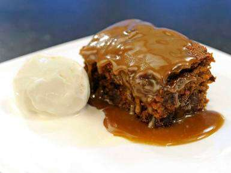
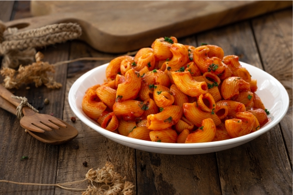

Sticky Toffee Pudding Recipe
Pudding
A rich, moist cake dipped in a sticky sauce. It is best served warm with a dollop of vanilla ice cream.

Paneer Streak
Paneer Dish
In the Continental food list, we are giving a pinch of India via Paneer Steak. So here is the Paneer Steak that's what we all Indian love, but it is baked with cheese and tomatoes to give a continental touch. It can also get served with mustard sauce, Strawberry Sauce, and more. It takes hardly 25 mins if you want to cook this delicious food.

Macroni
Pasta Dish
It is a popular dish in North America and is often cooked with elbow macaroni. The same dish, known simply as macaroni cheese, is also found in Great Britain. We have given an Indian twist to macaroni as well.